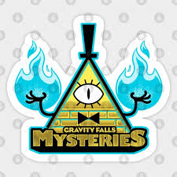

The Mysteries of Gravity Falls
"Gravity Falls is a mysterious animated series created by Alex Hirsch, filled with secret societies, hidden symbols, and reality-bending creatures. Beneath its cartoon surface lies a complex web of cryptograms, Easter eggs, and riddles waiting to be solved.
Cipher Types in Gravity Falls
Gravity Falls is known for its use of ciphers and codes, which are often hidden in the background or within the plot. Some of the most notable cipher types include Caesar Cipher, Atbash Cipher, A1Z26 Cipher, and Vigenère Cipher.
Major Mysteries
- The Journal: A mysterious book filled with secrets about the supernatural happenings in Gravity Falls. Dipper finds Journal 3, a guide to the town’s supernatural side. But who wrote it? What’s in Journals 1 and 2? And how do they connect to Bill Cipher?
- Bill Cipher: The enigmatic dream demon who manipulates events from the shadows.A powerful, interdimensional being shaped like a triangle with a top hat and a single eye. His motives? Chaos. His methods? Mind control, illusions, and manipulation. He hides in plain sight—literally—in most episodes.
- The Mystery Shack: A tourist trap that hides many secrets and oddities.
- Time Travel: The series explores the concept of time travel and its consequences.
- Secret Societies: Various groups operate in the shadows, each with their own agendas.
- The Portal: Beneath the Mystery Shack lies a secret portal capable of ripping through dimensions. Who built it? What’s on the other side?
- The Author: For most of the show, the author of the journals is unknown. Clues point to a recluse who studied Gravity Falls for decades. His identity is one of the show's biggest reveals.
Gravity Falls is known for its use of ciphers and codes, which are often hidden in the background or within the plot. Some of the most notable cipher types include Caesar Cipher, Atbash Cipher, A1Z26 Cipher, and Vigenère Cipher.